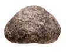
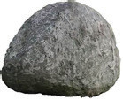
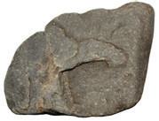

Pupil 1: Where is stone A?
Pupil 2: Stone A is on the [[blank:item-1]] (left, middle, right) of stone B.
Pupil 1: Is stone C on the left of the other two stones?
Pupil 2: [[blank:item-2]] (Yes, No) stone C is on the [[blank:item-3]] (left, middle, right).
Pupil 1: Is stone A on the left of stone B and C?
Pupil 2: [[blank:item-4]] (Yes, No) stone A is on the [[blank:item-5]] (left, middle, right) of stone B and C.
Pupil 1: Is stone B on the left of stone A and C?
Pupil 2: [[blank:item-6]] (Yes, No) stone B is in the [[blank:item-7]] (left, middle, right) of stone A and B.
The pictures of stones we have seen differ in size. Stone A is big, but Stone B is bigger than Stone A. Stone C is bigger than Stone B and Stone A. Thus, Stone C is the biggest because it is bigger than Stone A and B.
We often talk about how things are different or similar. We compare things to describe them better, for example, we might say one box is bigger than the other, or one toy is bigger than the other. When we compare things, we use words that show how something looks as compared to another similar thing or how someone looks compared to someone else. We may use words to show differences in size, such as big, bigger, biggest, or large, larger, largest, or small, smaller, smallest. We may also use words to show differences in quality, such as good, better, best, or clean, cleaner, cleanest.